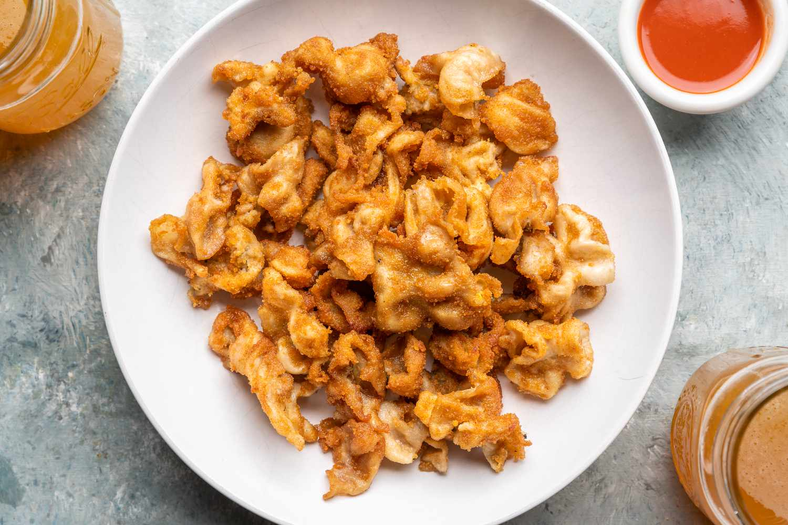

'Ain't nothin like a good bowl uh pig guts' as my meemaw used to say! :D
Let's get started with the ingredients one will need in order to manifest this delicious southern comfort cuisine:

Woah there big hoss! Eating peices of pig pooper ain't to be taken lightly. We want to ensure we are cleaning and handling the chitterlings properly.
Soak chitterlings in cold water throughout the cleaning stage. Each chitterling should be examined and run under cold water and all foreign materials should be removed and discarded. Chitterlings should retain some fat, so be careful to leave some on. After each chitterling has been cleaned, soak in two cold water baths for a few minutes. The second water bath should be clearer. If not, soak in one more bath. Be sure to wash any surfaces with a bleach-based sanitizer and your hands thoroughly with soap to avoid contamination while handling raw chitterlings.
"Let's make this shit!" - our chitlins at one point probably
Here are the steps we want to follow to bring this dish to life:
And there you have it! Delicious chitlins. Gobble it up cowboy!
Home